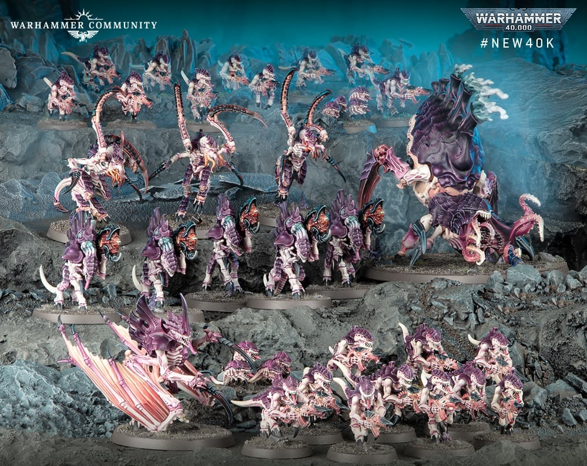
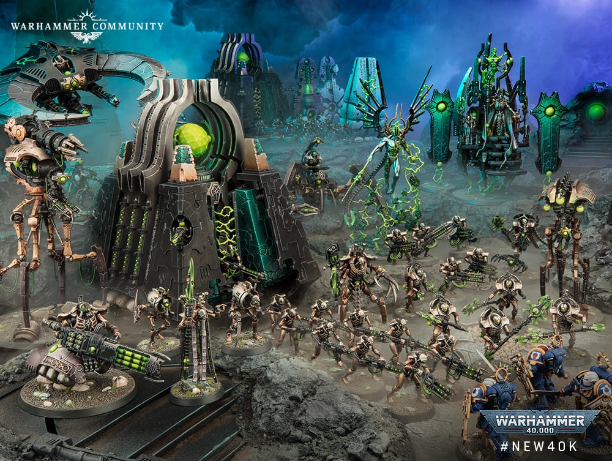
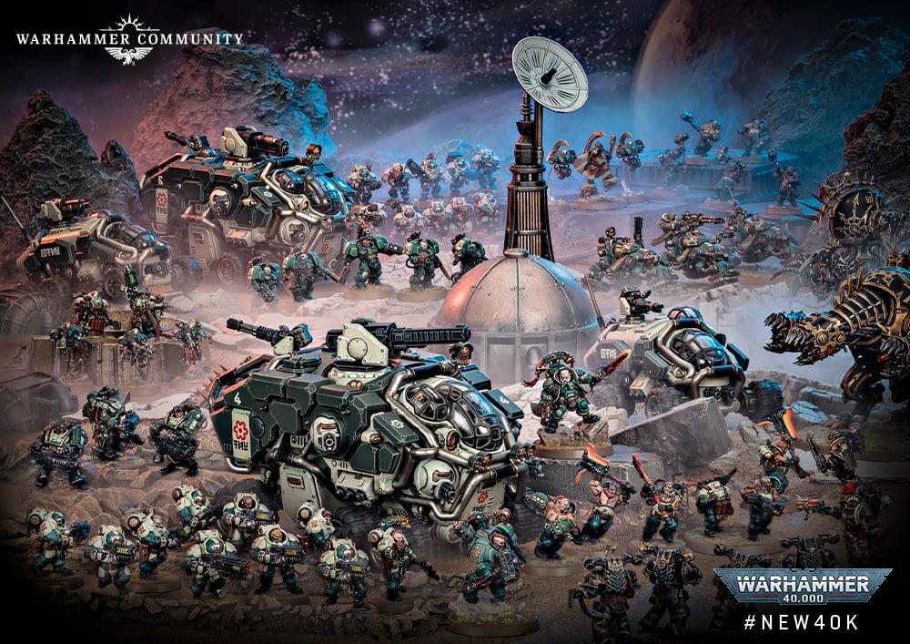
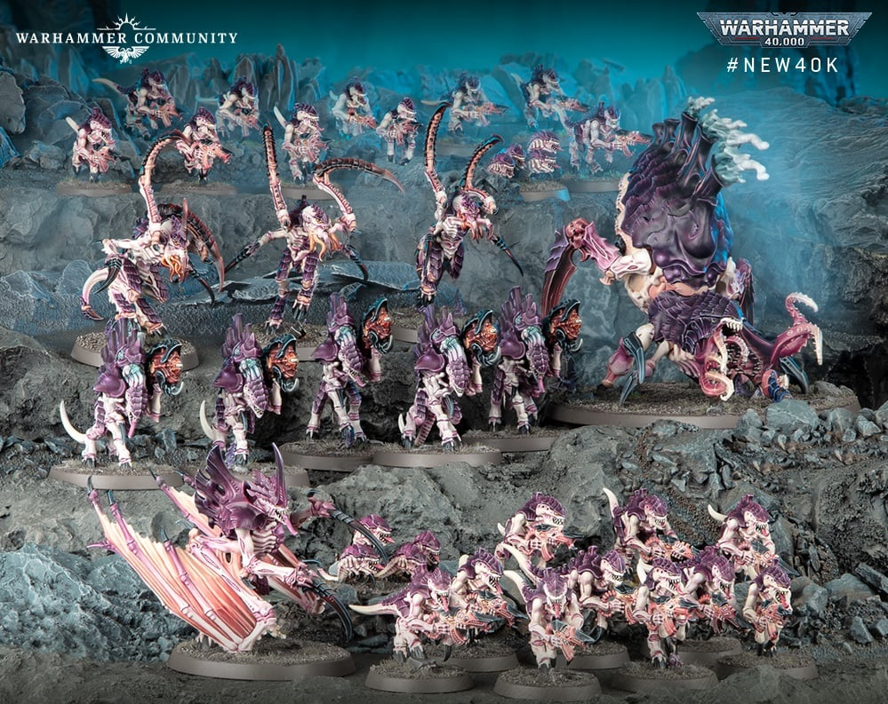
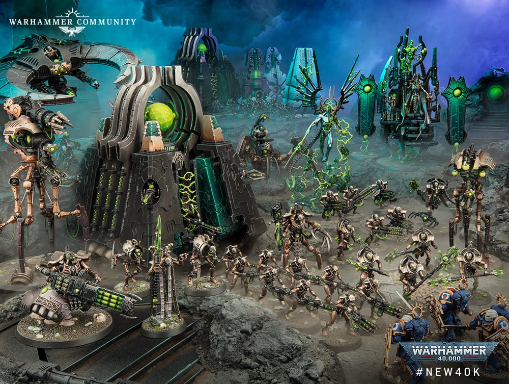
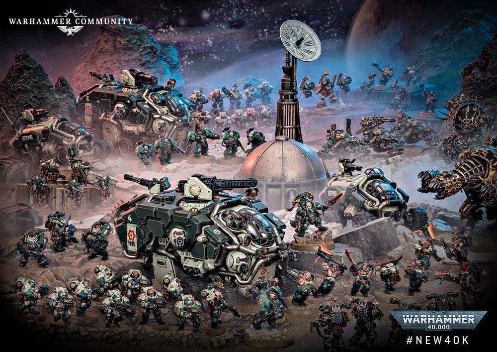

WARHAMMER 40K
En el siniestro futuro lejano, solo hay guerra

En el siniestro futuro lejano, solo hay guerra
Warhammer 40,000 es un juego de miniaturas de estrategia que se desarrolla en un universo distópico donde la humanidad se enfrenta a innumerables amenazas en una galaxia plagada de guerras eternas.
En el siniestro futuro del 41º milenio, el Imperio del Hombre lucha por sobrevivir frente a xenos alienígenas, hordas del Caos y traidores internos. La tecnología es una reliquia del pasado, y la guerra es el único destino conocido.
Los defensores de la humanidad, liderados por el Dios Emperador, luchan incansablemente contra los enemigos de la galaxia.
Antiguos traidores y sirvientes de los Dioses Oscuros, buscan destruir todo lo que el Imperio ha construido.
Una raza salvaje y beligerante, cuya única motivación es la guerra y el saqueo, buscando siempre la próxima batalla.
Una raza antigua y poderosa, que busca preservar lo que queda de su civilización mientras manipulan los eventos galácticos desde las sombras.
Una joven civilización que cree en el "Bien Supremo" y lucha por unificar la galaxia bajo su utópica visión.
Enjambres devoradores de mundos, que arrasan con todo a su paso en busca de biomasa para alimentar a la colmena.
Una antigua civilización hecha de metal viviente la cual gobernó la galaxia hace millones de años Luego se encerraron en sí mismos, planeando despertar en el futuro lejano de una galaxia lista para ser conquistada.
Una raza bajita pero muy tenaz protectores coon su familia y comunidad adoradores de inteligencias abominables
 




